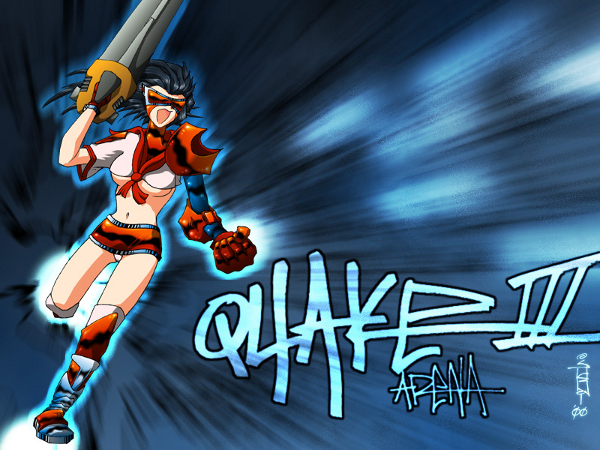
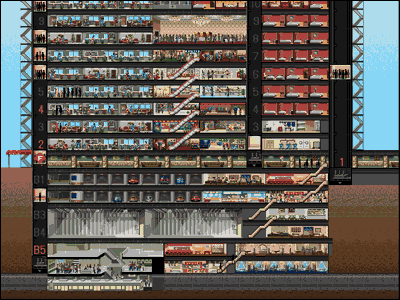
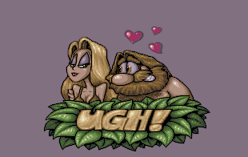
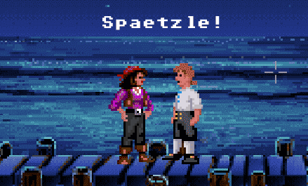
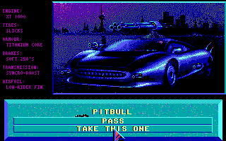
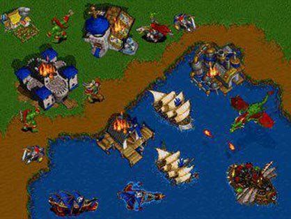
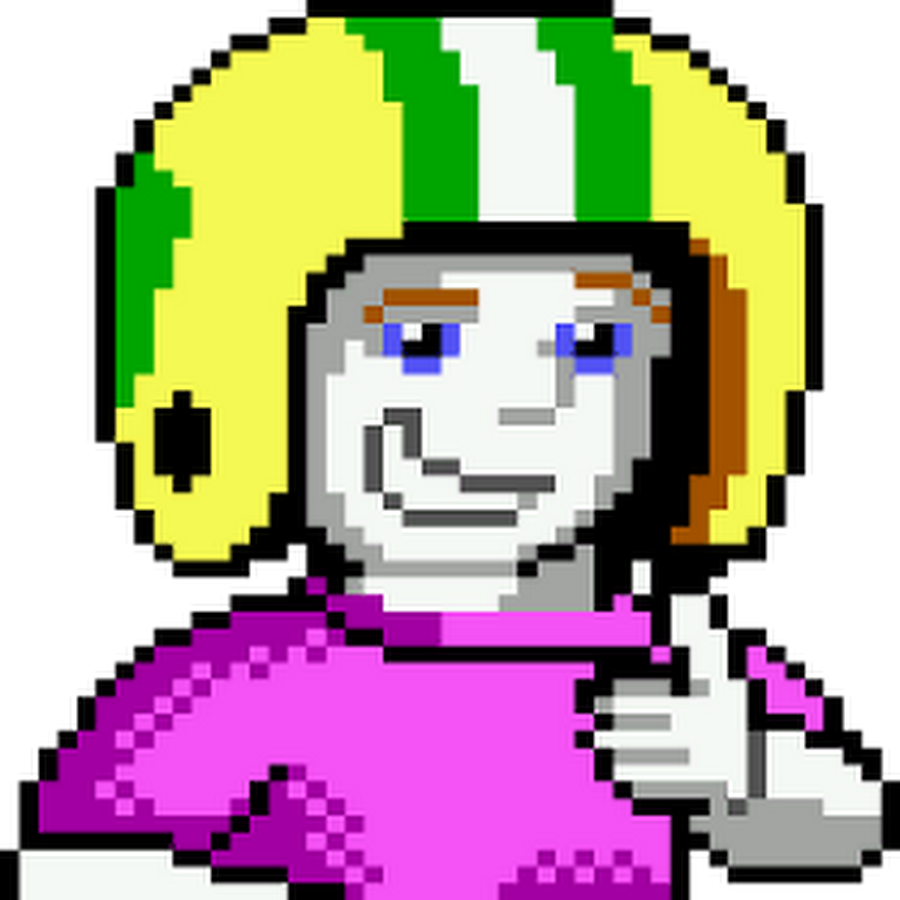
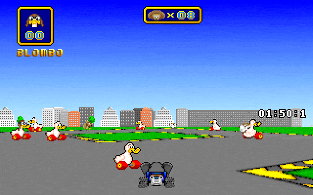
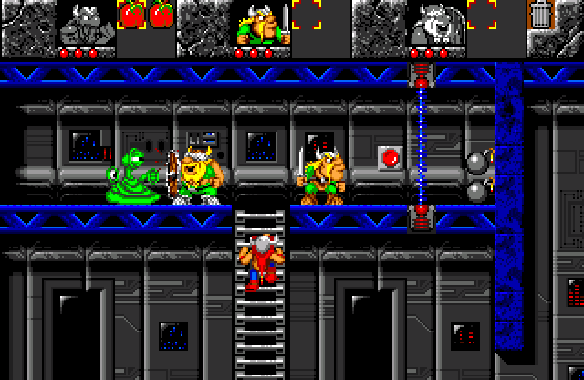

Games
Menschen spielen gern. Ob es sich um Karten-, Gesellschafts- oder Computerspiele handelt, alle erfüllen einen Zweck: sie unterhalten. Ich habe immer sehr gerne am Computer gespielt. Habe? Heute beschränkt es sich noch auf ein paar wenige Spiele. Warum? Na ja, ich habe vor allem in den 90ern und Anfang 2000er viel gespielt. Da war fast jedes Spiel etwas besonderes. Die Idee war neu, die graphische Umsetzung oft sehr verschieden. Heute kommen eher nur noch selten neue Spielideen auf, besser wird aber die Grafik. Diese Seite befasst sich hauptsächlich mit Spielen aus 80ern,90ern und Anfang 2000er.
Ich erstelle hier eine Liste mit den Spielen, die ich gerne gespielt habe oder auch noch immer gern spiele. Mit Erinnerungen verknüpft man ja bekanntlich Gefühle und wenn ich an diese Zeit zurückdenke, darüber spreche oder sie neu aufleben lasse, fühle ich mich einfach wohl. Vielleicht kann sich auch der ein oder andere von euch in die "alten Zeiten" zurückversetzen, erinnert sich an ein vermeintlich längst vergessenes Spiel oder bekommt sogar selbst noch mal Lust, in der alten CD-Sammlung zu wühlen. Ich für meinen Teil habe damit jedenfalls schon begonnen:"
| 
Sim Tower |

UGH! |

The Secret of Monkey Island |
| 
Death Track |

Warcraft II |

Commander Keen |
| 
Wacky Wheels |

Atomic Bomberman |

Lost Vikings |